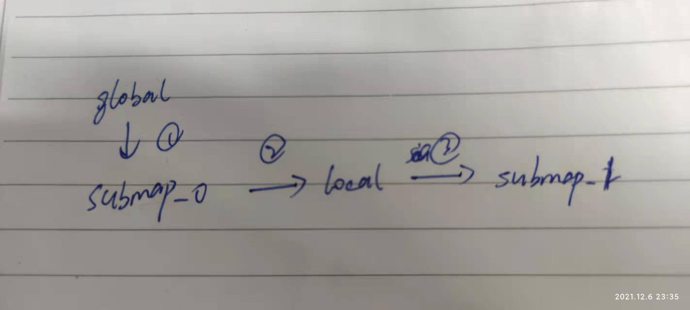

添加子图约束的函数，是放入线程池计算的其中一个，于函数PoseGraph2D::AddNode中
1 2 3 4 5 AddWorkItem ([=]() LOCKS_EXCLUDED (mutex_) { return ComputeConstraintsForNode (node_id, insertion_submaps, newly_finished_submap); });
传入的数据内容为
node_id：节点ID，即一个位姿
insertion_submaps： 子图，到底是什么？
newly_finished_submap：第一个子图是否是完成状态的布尔值
ComputeConstraintsForNode 1 2 3 4 5 6 7 8 9 10 11 12 13 14 15 16 17 WorkItem::Result PoseGraph2D::ComputeConstraintsForNode ( const NodeId& node_id, std::vector<std::shared_ptr<const Submap2D>> insertion_submaps, const bool newly_finished_submap) std::vector<SubmapId> submap_ids; std::vector<SubmapId> finished_submap_ids; std::set<NodeId> newly_finished_submap_node_ids; {
获取节点的信息，node_id不过是添加后的自然增长的序号
1 2 3 const auto & constant_data = data_.trajectory_nodes.at (node_id).constant_data;
获取 trajectory_id 下的正处于活跃状态下的子图的SubmapId
1 2 3 submap_ids = InitializeGlobalSubmapPoses ( node_id.trajectory_id, constant_data->time, insertion_submaps);
获取前一个的submap Id，并计算他的二维坐标
1 2 3 4 5 6 7 const SubmapId matching_id = submap_ids.front (); const transform::Rigid2d local_pose_2d = transform::Project2D (constant_data->local_pose * transform::Rigid3d::Rotation ( constant_data->gravity_alignment.inverse ()));
计算Node在global下的坐标
1 2 3 4 5 6 const transform::Rigid2d global_pose_2d = optimization_problem_->submap_data ().at (matching_id).global_pose * constraints::ComputeSubmapPose (*insertion_submaps.front ()).inverse () * local_pose_2d;
把该节点的信息加入到OptimizationProblem中
1 2 3 4 5 6 optimization_problem_->AddTrajectoryNode ( matching_id.trajectory_id, optimization::NodeSpec2D{constant_data->time, local_pose_2d, global_pose_2d, constant_data->gravity_alignment});
添加子图和节点的约束。子图内约束 遍历submap
向submap添加node_id
计算 子图原点 指向 node坐标 间的坐标变换(子图内约束)
把子图内约束放入容器中
1 2 3 4 5 6 7 8 9 10 11 12 13 14 15 16 17 18 19 20 21 22 for (size_t i = 0 ; i < insertion_submaps.size (); ++i) { const SubmapId submap_id = submap_ids[i]; CHECK (data_.submap_data.at (submap_id).state == SubmapState::kNoConstraintSearch); data_.submap_data.at (submap_id).node_ids.emplace (node_id); const transform::Rigid2d constraint_transform = constraints::ComputeSubmapPose (*insertion_submaps[i]).inverse () * local_pose_2d; data_.constraints.push_back ( Constraint{submap_id, node_id, {transform::Embed3D (constraint_transform), options_.matcher_translation_weight (), options_.matcher_rotation_weight ()}, Constraint::INTRA_SUBMAP}); }
记录下所有已经finish的submapID
1 2 3 4 5 6 7 for (const auto & submap_id_data : data_.submap_data) { if (submap_id_data.data.state == SubmapState::kFinished) { CHECK_EQ (submap_id_data.data.node_ids.count (node_id), 0 ); finished_submap_ids.emplace_back (submap_id_data.id); } }
如果是刚刚finished的submap，则记录它的子图数据，并且记录该子图下的所有节点。
1 2 3 4 5 6 7 8 9 10 11 12 if (newly_finished_submap) { const SubmapId newly_finished_submap_id = submap_ids.front (); InternalSubmapData& finished_submap_data = data_.submap_data.at (newly_finished_submap_id); CHECK (finished_submap_data.state == SubmapState::kNoConstraintSearch); finished_submap_data.state = SubmapState::kFinished; newly_finished_submap_node_ids = finished_submap_data.node_ids; }
回环：当前节点与所有已经完成的子图进行约束的计算 node_id 是函数传进来固定的一个节点，计算改节点和其他已经完成的子图的约束
1 2 3 4 5 for (const auto & submap_id : finished_submap_ids) { ComputeConstraint (node_id, submap_id); }
回环： 计算所有节点与刚完成子图间的约束 如果有刚刚完成的子图，则计算所有节点和他的约束，调用的函数依然是ComputeConstraint，传入node_id和submap_id
1 2 3 4 5 6 7 8 9 10 11 12 13 if (newly_finished_submap) { const SubmapId newly_finished_submap_id = submap_ids.front (); for (const auto & node_id_data : optimization_problem_->node_data ()) { const NodeId& node_id = node_id_data.id; if (newly_finished_submap_node_ids.count (node_id) == 0 ) { ComputeConstraint (node_id, newly_finished_submap_id); } } }
结束构建约束 1 constraint_builder_.NotifyEndOfNode ();
判断是否需要优化 只有当numnodes_since_last_loop_closure > 90的时候，即默认的参数，90个节点，才执行一次优化
如果设置为0，后端就不会执行优化
1 2 3 4 5 6 7 8 9 10 absl::MutexLock locker (&mutex_) ;++num_nodes_since_last_loop_closure_; if (options_.optimize_every_n_nodes () > 0 && num_nodes_since_last_loop_closure_ > options_.optimize_every_n_nodes ()) { return WorkItem::Result::kRunOptimization; } return WorkItem::Result::kDoNotRunOptimization;
InitializeGlobalSubmapPoses 此函数返回当前活跃状态的子图的ID，初始化一个GlobalSubmapPose
data_.global_submap_poses_2d:全都是优化后的子图在global坐标系下的pose
optimizationproblem ->submap_data():包含了优化后和还没有进行优化的子图在global坐标系下的pose
一个子图 如果slam刚刚开始，子图肯定只有一个，如果这条轨迹上还没有添加submap的pose，则把这个轨迹添加到optimizationproblem 中去，并且把submap的local_pose转换到global_pose
1 2 3 4 5 6 7 8 9 10 11 12 13 14 15 16 17 if (submap_data.SizeOfTrajectoryOrZero (trajectory_id) == 0 ) { if (data_.initial_trajectory_poses.count (trajectory_id) > 0 ) { data_.trajectory_connectivity_state.Connect ( trajectory_id, data_.initial_trajectory_poses.at (trajectory_id).to_trajectory_id, time); } optimization_problem_->AddSubmap ( trajectory_id, transform::Project2D ( ComputeLocalToGlobalTransform ( data_.global_submap_poses_2d, trajectory_id) * insertion_submaps[0 ]->local_pose ())); }
现在已经有了此轨迹的数据，直接新建一个SubmapId并且返回，它由轨迹ID和submap的索引组成
1 2 3 4 5 6 const SubmapId submap_id{trajectory_id, 0 };CHECK (data_.submap_data.at (submap_id).submap == insertion_submaps.front ());return {submap_id};
注意，这里做的check是因为在AppendNode函数中，已经把data_.submap_data.at(submap_id).submap做过赋值，因为只有一个子图，所以front和back是一样的
1 2 3 4 5 6 7 8 9 10 NodeId PoseGraph2D::AppendNode ( const SubmapId submap_id = data_.submap_data.Append(trajectory_id, InternalSubmapData()); data_.submap_data.at(submap_id).submap = insertion_submaps.back();
两个子图 现在进行有两个子图的情况，
如果optimizationproblem 中最后一个此轨迹的数据的ID等于insertion_submaps的front的数据，
1 2 3 4 5 6 7 const auto end_it = submap_data.EndOfTrajectory (trajectory_id); const SubmapId last_submap_id = std::prev (end_it)->id;if (data_.submap_data.at (last_submap_id).submap == insertion_submaps.front ()) {
那就说back的那个数据还没有加入，就通过AddSubmap 进行添加该子图的global位姿 ，需要计算子图在global下的坐标。
注意这里的坐标换边，
first_submap_pose 表示1
constraints::ComputeSubmapPose(*insertion_submaps[0]).inverse() 表示2
constraints::ComputeSubmapPose(*insertion_submaps[1]) 表示3
最后返回这个submapID和 下一个submapID。生成的是submap_1在global坐标系下的Pose。

1 2 3 4 5 6 7 8 9 10 11 12 13 14 15 16 const auto & first_submap_pose = submap_data.at (last_submap_id).global_pose; optimization_problem_->AddSubmap ( trajectory_id, first_submap_pose * constraints::ComputeSubmapPose (*insertion_submaps[0 ]).inverse () * constraints::ComputeSubmapPose (*insertion_submaps[1 ])); return {last_submap_id, SubmapId{trajectory_id, last_submap_id.submap_index + 1 }}; }
如果optimizationproblem 中最后一个轨迹数据的ID的submap等于insertion_submaps的backup的数据
则，说明两个子图都已经加入到优化问题中了，可以直接返回两个子图的submapID，即上一个submapID
1 2 3 4 5 6 7 8 9 CHECK (data_.submap_data.at (last_submap_id).submap == insertion_submaps.back ()); const SubmapId front_submap_id{trajectory_id, last_submap_id.submap_index - 1 }; CHECK (data_.submap_data.at (front_submap_id).submap == insertion_submaps.front ()); return {front_submap_id, last_submap_id};